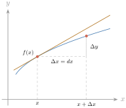
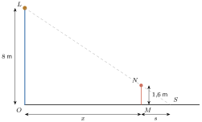

- គណនាតម្លៃប្រហែលដោយប្រើឌីផេរ៉ង់ស្យែល
- កំណត់វិសមភាពកំណើនមានកំណត់
- ដោះស្រាយចំណោទវិសមភាពដោយប្រើវិសមភាពកំណើនមានកំណត់
- ប៉ាន់ស្មានតម្លៃប្រហែលនៃប្រាក់ចំណាយម៉ាជីណាល ចំណូលម៉ាជីណាល និងចំណេញម៉ាជីណាល ។
1. ឌីផេរ៉ង់ស្យែល
ឧទាហរណ៍ : គេមានអនុគមន៍ \(\displaystyle y = f(x)\) ។ បើតម្លៃ \(\displaystyle x\) ប្រែប្រួលពី \(\displaystyle x\) ទៅ \(\displaystyle x + \Delta x\) នោះតម្លៃត្រូវគ្នានៃ \(\displaystyle y\) ក៏ប្រែប្រួលដែរ គឺប្រែប្រួលពី \(\displaystyle f(x)\) ទៅ \(\displaystyle f(x + \Delta x)\) ហើយបម្រែបម្រួលនៃអនុគមន៍ \(\displaystyle y\) កំណត់តាងដោយ \(\displaystyle \Delta y = f(x + \Delta x) - f(x)\) ។

ផលធៀប \(\displaystyle \dfrac{\Delta y}{\Delta x} = \dfrac{f(x + \Delta x) - f(x)}{\Delta x}\) ជាផលធៀបកំណើននៃអនុគមន៍ \(\displaystyle y = f(x)\) និងកំណើននៃអថេរ \(\displaystyle x\) ។ ផលធៀប \(\displaystyle \dfrac{\Delta y}{\Delta x}\) គឺជាមេគុណប្រាប់ទិសនៃខ្សែកាត់ក្រាបតាងអនុគមន៍តាមពីរចំណុច ។ កាលណា \(\displaystyle \Delta x\) ខិតជិត \(\displaystyle 0\) ខ្សែកាត់នេះខិតទៅរកបន្ទាត់ប៉ះក្រាបតាងអនុគមន៍ ។ ចំណែកមេគុណប្រាប់ទិសនៃបន្ទាត់ប៉ះក្រាបតាងអនុគមន៍ជាដេរីវេទី \(\displaystyle 1\) គឺ \(\displaystyle \dfrac{dy}{dx}\) ។ ដូច្នេះគេបាន \(\displaystyle \dfrac{dy}{dx} = \displaystyle\lim_{\Delta x \to 0}\dfrac{\Delta y}{\Delta x} = f'(x)\) ឬ \(\displaystyle dy = f'(x)\,dx\) ។ និមិត្តសញ្ញា \(\displaystyle dy\) និង \(\displaystyle dx\) ហៅថា ឌីផេរ៉ង់ស្យែល ។
កាលណា \(\displaystyle \Delta x \to 0\) នោះ \(\displaystyle \dfrac{dy}{dx} \approx \dfrac{\Delta y}{\Delta x}\) ដោយ \(\displaystyle dx = \Delta x\) ។ គេបាន \(\displaystyle dy \approx \Delta y\) ដោយ \(\displaystyle \Delta y = f(x + \Delta x) - f(x)\), \(\displaystyle f(x + \Delta x) = \Delta y + f(x)\) នាំឱ្យ \(\displaystyle f(x + \Delta x) \approx f(x) + dy = f(x) + f'(x)dx\) ។ ដូច្នេះ គេអាចប្រើ \(\displaystyle dy\) ដើម្បីគណនាតម្លៃប្រហែលនៃ \(\displaystyle f(x + \Delta x)\) បាន ។
និយមន័យ បើអនុគមន៍ \(\displaystyle y = f(x)\) មានដេរីវេ នោះឌីផេរ៉ង់ស្យែល \(\displaystyle dy\) កំណត់តាងដោយ \(\displaystyle dy = f'(x)\,dx\) ។
គេមានអនុគមន៍ \(\displaystyle y = x^2\) ។ រក \(\displaystyle dy\) នៅត្រង់ \(\displaystyle x = 1\) និង \(\displaystyle dx = 0{,}01\) រួចប្រៀបធៀប \(\displaystyle dy\) និង \(\displaystyle \Delta y\) នៅត្រង់ \(\displaystyle x = 1\) និង \(\displaystyle \Delta x = 0{,}01\) ។
ដោយ \(\displaystyle y = f(x) = x^2\) គេបាន \(\displaystyle f'(x) = 2x\) និង \(\displaystyle dy = f'(x)\,dx\) ដោយ \(\displaystyle x = 1\) និង \(\displaystyle dx = 0{,}01\) ៖ \(\displaystyle dy = f'(1) \times (0{,}01) = 2 \times (0{,}01) = 0{,}02\) ។ ដោយ \(\displaystyle x = 1\) និង \(\displaystyle \Delta x = 0{,}01\) គេបាន \(\displaystyle \Delta y = f(x + \Delta x) - f(x) = f(1{,}01) - f(1) = (1{,}01)^2 - 1^2 = 0{,}0201\) ; \(\displaystyle \Delta y - dy = 0{,}0201 - 0{,}02 = 0{,}0001\) ។ ដូច្នេះ \(\displaystyle \Delta y \approx dy\) ។
ប្រើឌីផេរ៉ង់ស្យែលដើម្បីគណនាតម្លៃប្រហែលនៃ \(\displaystyle \sqrt{15}\) ។
តាង \(\displaystyle f(x) = \sqrt x\), \(\displaystyle x = 16\) និង \(\displaystyle \Delta x = -1\) នោះ \(\displaystyle 15 = 16 + \Delta x\) ។ ដោយ \(\displaystyle f(x) = \sqrt x\) គេបាន \(\displaystyle f'(x) = \dfrac{1}{2\sqrt x}\) ។ \(\displaystyle dy = f'(x)\,dx = \dfrac{1}{2\sqrt x}\,dx = \dfrac{1}{2\sqrt{16}}(-1) = -0{,}125\) ។ ដូច្នេះ \(\displaystyle \sqrt{15} \approx \sqrt{16} + dy = 4 - 0{,}125 = 3{,}875\) ។ (តម្លៃពិត \(\displaystyle \sqrt{15} \approx 3{,}873\) ។)
ប្រើឌីផេរ៉ង់ស្យែលដើម្បីគណនាតម្លៃប្រហែលនៃ \(\displaystyle \sin31^\circ\) ។
តាង \(\displaystyle f(x) = \sin x\), \(\displaystyle x = 30^\circ = \dfrac\pi6\) និង \(\displaystyle \Delta x = 1^\circ = \dfrac{\pi}{180}\) នោះ \(\displaystyle 31^\circ = \dfrac\pi6 + \dfrac\pi{180}\) ។ ដោយ \(\displaystyle f(x) = \sin x\) គេបាន \(\displaystyle f'(x) = \cos x\) ; \(\displaystyle dy = f'(x)\,dx = \cos x\,dx = \left(\cos\dfrac\pi6\right)\cdot\dfrac{\pi}{180} = \dfrac{\sqrt3}{2}\cdot\dfrac{\pi}{180} = \dfrac{\pi\sqrt3}{360}\) ។ ដូច្នេះ \(\displaystyle \sin31^\circ = \sin\left(\dfrac\pi6 + \dfrac\pi{180}\right) \approx \sin\dfrac\pi6 + dy = \dfrac12 + \dfrac{\pi\sqrt3}{360} \approx 0{,}515\) ។
ប្រើឌីផេរ៉ង់ស្យែលដើម្បីគណនាតម្លៃប្រហែលនៃ ក. \(\displaystyle 5(3{,}02)^3 - 3(3{,}02)^2\) ខ. \(\displaystyle \sqrt{3{,}02}\) គ. \(\displaystyle \sin46^\circ\) ។
មើលចម្លើយ
ក. តាង \(\displaystyle f(x) = 5x^3 - 3x^2\) ; \(\displaystyle f'(x) = 15x^2 - 6x\) ; \(\displaystyle f(3) = 135 - 27 = 108\), \(\displaystyle f'(3) = 135 - 18 = 117\) ; \(\displaystyle f(3{,}02) \approx 108 + 117 \times 0{,}02 = 110{,}34\) ។ ខ. តាង \(\displaystyle f(x) = \sqrt x\) ជាមួយ \(\displaystyle x = 3\) ; \(\displaystyle f'(3) = \dfrac{1}{2\sqrt3}\) ដូច្នេះ \(\displaystyle \sqrt{3{,}02} \approx \sqrt3 + \dfrac{0{,}02}{2\sqrt3} \approx 1{,}732 + 0{,}006 = 1{,}738\) ។ គ. \(\displaystyle \sin46^\circ \approx \sin45^\circ + \cos45^\circ \cdot\dfrac\pi{180} = \dfrac{\sqrt2}{2}\left(1 + \dfrac{\pi}{180}\right) \approx 0{,}719\) ។ (សម្គាល់ ៖ សៀវភៅបោះពុម្ពសំណួរ ក. ជា \(\displaystyle 5(3{,}02)^2 - 3(3{,}02)^2\) ប៉ុន្តែចម្លើយ \(\displaystyle 110{,}34\) ត្រូវនឹង \(\displaystyle 5(3{,}02)^3 - 3(3{,}02)^2\) ; ហើយចម្លើយ ខ. \(\displaystyle 1{,}755\) ដែលបានពី \(\displaystyle \sqrt{4 - 0{,}98} \approx 2 - \dfrac{0{,}98}{4}\) ជាការប៉ាន់ស្មានគ្រោតគ្រាត ព្រោះ \(\displaystyle 3{,}02\) នៅឆ្ងាយពី \(\displaystyle 4\) ; តម្លៃពិត \(\displaystyle \sqrt{3{,}02} \approx 1{,}7378\) ។)
2. វិសមភាពកំណើនមានកំណត់
ទ្រឹស្ដីបទ គេឱ្យ \(\displaystyle f\) ជាអនុគមន៍កំណត់និងជាប់ ហើយមានដេរីវេលើចន្លោះ \(\displaystyle I\) ។ បើមានពីរចំនួនពិត \(\displaystyle m\) និង \(\displaystyle M\) ដែលចំពោះគ្រប់ \(\displaystyle x \in I\), \(\displaystyle m \le f'(x) \le M\) នោះគ្រប់ចំនួនពិត \(\displaystyle a, b \in I\) ដែល \(\displaystyle a < b\) គេបាន \(\displaystyle m(b - a) \le f(b) - f(a) \le M(b - a)\) ។
សម្រាយបញ្ជាក់ ៖ គេឱ្យអនុគមន៍ \(\displaystyle g : x \mapsto f(x) - mx\) មានដេរីវេលើ \(\displaystyle I\) និង \(\displaystyle g'(x) = f'(x) - m\) ។ គេបាន \(\displaystyle g'(x) \ge 0\) គ្រប់ \(\displaystyle x \in I\) មានន័យថា \(\displaystyle g(x)\) ជាអនុគមន៍កើនលើ \(\displaystyle I\) និងកើនលើ \(\displaystyle [a, b]\) ។ គេបាន \(\displaystyle g(b) - g(a) \ge 0\) ឬ \(\displaystyle [f(b) - mb] - [f(a) - ma] \ge 0\) ឬ \(\displaystyle m(b - a) \le f(b) - f(a)\) (1) ។ ដូចគ្នាដែរ គេឱ្យអនុគមន៍ \(\displaystyle h : x \mapsto f(x) - Mx\) មានដេរីវេលើ \(\displaystyle I\) និង \(\displaystyle h'(x) = f'(x) - M\) ។ គេបាន \(\displaystyle h'(x) \le 0\) គ្រប់ \(\displaystyle x \in I\) មានន័យថា \(\displaystyle h(x)\) ជាអនុគមន៍ចុះលើ \(\displaystyle I\) និងលើ \(\displaystyle [a, b]\) ។ គេបាន \(\displaystyle h(b) - h(a) \le 0\) ឬ \(\displaystyle [f(b) - Mb] - [f(a) - Ma] \le 0\) ឬ \(\displaystyle f(b) - f(a) \le M(b - a)\) (2) ។ តាម (1) និង (2) គេទាញបាន ថាបើ \(\displaystyle f\) ជាអនុគមន៍មានដេរីវេលើ \(\displaystyle I\) ដែលគ្រប់ \(\displaystyle x \in I\), \(\displaystyle m \le f'(x) \le M\) នោះគេបាន \(\displaystyle m(b - a) \le f(b) - f(a) \le M(b - a)\) ។
គេឱ្យអនុគមន៍ \(\displaystyle f\) កំណត់លើ \(\displaystyle (-1, +\infty)\) ដែល \(\displaystyle f(x) = \sqrt{1 + x}\) ។
ក. កំណត់តម្លៃអតិបរមានៃអនុគមន៍ដេរីវេ \(\displaystyle f'(x)\) ចំពោះគ្រប់ \(\displaystyle x \in \left[0, \dfrac12\right]\) ។
ខ. បង្ហាញថាចំពោះគ្រប់ \(\displaystyle x \in \left[0, \dfrac12\right]\) គេបាន \(\displaystyle 1 + \dfrac{1}{\sqrt6}x \le f(x) \le 1 + \dfrac12x\) ។
ក. គេមាន \(\displaystyle f(x) = \sqrt{1 + x}\) គេបាន \(\displaystyle f'(x) = \dfrac{1}{2\sqrt{1 + x}}\) ដែល \(\displaystyle f'(0) \ge f'(x) \ge f'\left(\dfrac12\right)\) (ព្រោះ \(\displaystyle f'\) ជាអនុគមន៍ចុះ) ។ ដោយ \(\displaystyle f'(0) = \dfrac12\) និង \(\displaystyle f'\left(\dfrac12\right) = \dfrac{1}{\sqrt6}\) ។ ដូច្នេះ ចំពោះគ្រប់ \(\displaystyle x \in \left[0, \dfrac12\right]\) គេបាន \(\displaystyle \dfrac{1}{\sqrt6} \le f'(x) \le \dfrac12\) ។
ខ. គេមាន \(\displaystyle x \in \left[0, \dfrac12\right]\), \(\displaystyle \dfrac{1}{\sqrt6} \le f'(x) \le \dfrac12\) ។ អនុវត្តវិសមភាពកំណើនមានកំណត់ គេបាន \(\displaystyle \dfrac{1}{\sqrt6}(x - 0) \le f(x) - f(0) \le \dfrac12(x - 0)\) ដោយ \(\displaystyle f(0) = 1\) ។ ដូច្នេះ \(\displaystyle 1 + \dfrac{1}{\sqrt6}x \le f(x) \le 1 + \dfrac12x\) ។
គេឱ្យអនុគមន៍ \(\displaystyle f\) កំណត់លើ \(\displaystyle \mathbb{R}\) ដែល \(\displaystyle f(x) = \sin x\) ។ ក. កំណត់តម្លៃអតិបរមានៃអនុគមន៍ដេរីវេ \(\displaystyle f'(x)\) ចំពោះ \(\displaystyle x \in \left[0, \dfrac\pi4\right]\) ។ ខ. បង្ហាញថាចំពោះគ្រប់ \(\displaystyle x \in \left[0, \dfrac\pi4\right]\) គេបាន \(\displaystyle \dfrac{\sqrt2}{2}x \le \sin x \le x\) ។
មើលចម្លើយ
ក. \(\displaystyle f'(x) = \cos x\) ចុះលើ \(\displaystyle \left[0, \dfrac\pi4\right]\) ដូច្នេះ \(\displaystyle \dfrac{\sqrt2}{2} \le f'(x) \le 1\) ។ ខ. ពី \(\displaystyle f(0) = 0\) គេបាន \(\displaystyle \dfrac{\sqrt2}{2}x \le \sin x \le x\) ។
ទ្រឹស្ដីបទ គេឱ្យអនុគមន៍ \(\displaystyle f\) មានដេរីវេលើចន្លោះ \(\displaystyle [a, b]\) ។ បើមានចំនួនពិត \(\displaystyle M\) ដែល \(\displaystyle |f'(x)| \le M\) ចំពោះ \(\displaystyle x \in [a, b]\) នោះគេបានវិសមភាព \(\displaystyle |f(b) - f(a)| \le M|b - a|\) ។
សម្រាយបញ្ជាក់ គេមានអនុគមន៍ \(\displaystyle f\) មានដេរីវេលើ \(\displaystyle I\) ហើយចំពោះគ្រប់ \(\displaystyle x \in I\) គេបាន \(\displaystyle -M \le f'(x) \le M\) ។ តាមវិសមភាពកំណើនមានកំណត់ ចំពោះ \(\displaystyle a < b\) គេបាន \(\displaystyle -M(b - a) \le f(b) - f(a) \le M(b - a)\) (1) ; ចំពោះ \(\displaystyle a > b\) គេបាន \(\displaystyle -M(a - b) \le f(a) - f(b) \le M(a - b)\) (2) ។ តាម (1) និង (2) គេបាន \(\displaystyle |f(b) - f(a)| \le M|a - b|\) ។
គេឱ្យអនុគមន៍ \(\displaystyle f\) មានដេរីវេលើ \(\displaystyle \mathbb{R}\) ដែល \(\displaystyle f(t) = \cos t\) ។ បង្ហាញថាចំពោះគ្រប់ \(\displaystyle x, y \in \mathbb{R}\) គេបាន \(\displaystyle |\cos x - \cos y| \le |x - y|\) ។
គេមាន \(\displaystyle f(t) = \cos t\) នាំឱ្យ \(\displaystyle f'(t) = -\sin t\) ។ គេបានវិសមភាព \(\displaystyle |f'(t)| \le 1\) ចំពោះគ្រប់ \(\displaystyle t \in \mathbb{R}\) ។ ដូច្នេះ ចំពោះគ្រប់ \(\displaystyle x, y \in \mathbb{R}\) គេបាន \(\displaystyle |\cos x - \cos y| \le |x - y|\) ។
គេឱ្យ \(\displaystyle f\) ជាអនុគមន៍កំណត់លើចន្លោះ \(\displaystyle [1, 2]\) ដែល \(\displaystyle f(x) = x^3 + 2x + 1\) ។ ដោយអនុវត្តវិសមភាពកំណើនមានកំណត់ រកតម្លៃមធ្យមនៃ \(\displaystyle f(1{,}01)\) ។
មើលចម្លើយ
\(\displaystyle f'(x) = 3x^2 + 2\) កើនលើ \(\displaystyle [1, 1{,}01]\) ដូច្នេះ \(\displaystyle 5 \le f'(x) \le 3(1{,}01)^2 + 2 \approx 5{,}0603\) ។ ហើយ \(\displaystyle f(1) = 4\) ដូច្នេះ \(\displaystyle 4 + 5 \times 0{,}01 \le f(1{,}01) \le 4 + 5{,}0603 \times 0{,}01\) គឺ \(\displaystyle 4{,}05 \le f(1{,}01) \le 4{,}0506\) ។ (តម្លៃពិត \(\displaystyle f(1{,}01) = 4{,}050301\) ។)
3. អនុវត្តន៍ក្នុងសេដ្ឋកិច្ច
ផ្នែកនេះគេនឹងសិក្សាតម្លៃប្រហែលនៃអនុគមន៍ដែលទាក់ទងក្នុងសេដ្ឋកិច្ច និងពាណិជ្ជកម្ម ៖
- \(\displaystyle C(x)\) ហៅថាអនុគមន៍នៃប្រាក់ចំណាយសរុបក្នុងការផលិតសម្ភារៈ \(\displaystyle x\) គ្រឿង
- \(\displaystyle R(x)\) ហៅថាអនុគមន៍នៃប្រាក់ចំណូលសរុបដែលបានពីការលក់សម្ភារៈ \(\displaystyle x\) គ្រឿង
- \(\displaystyle P(x) = R(x) - C(x)\) ហៅថាអនុគមន៍នៃប្រាក់ចំណេញដែលបានពីការលក់សម្ភារៈ \(\displaystyle x\) គ្រឿង ។
តម្លៃនៃអនុគមន៍ទាំងបីខាងលើអាស្រ័យនឹងតម្លៃ \(\displaystyle x\) និងតម្លៃប្រែប្រួល \(\displaystyle \Delta x\) នៃ \(\displaystyle x\) ។ បន្ទាប់មកគេនិងតាមដានពីការគណនាតម្លៃប្រហែលដោយប្រើការវិភាគលើម្លៃតត្រង់ និងដេរីវេនៃអនុគមន៍ទាំងបីខាងលើ ៖
- \(\displaystyle C'(x)\) ហៅថាអនុគមន៍នៃប្រាក់ចំណាយម៉ាជីណាល
- \(\displaystyle R'(x)\) ហៅថាអនុគមន៍នៃប្រាក់ចំណូលម៉ាជីណាល
- \(\displaystyle P'(x)\) ហៅថាអនុគមន៍នៃប្រាក់ចំណេញម៉ាជីណាល ។
3.1. ប្រាក់ចំណាយម៉ាជីណាល
ឧទាហរណ៍ : បើប្រាក់ចំណាយសរុបក្នុងការផលិតសម្ភារៈ \(\displaystyle x\) គ្រឿង តាងដោយ \(\displaystyle C(x)\) នោះប្រាក់ចំណាយសរុបក្នុងការផលិតសម្ភារៈ \(\displaystyle x + 1\) គ្រឿងតាងដោយ \(\displaystyle C(x + 1)\) ។ ឧបមាថា \(\displaystyle C(x) = 350 + 8x - 0{,}2x^2\) គិតជាពាន់រៀល ។ គេបាន \(\displaystyle C(10) = 350 + 8 \times 10 - 0{,}2 \times 10^2 = 410\) ពាន់រៀល ជាប្រាក់ចំណាយក្នុងការផលិតសម្ភារៈ \(\displaystyle 10\) គ្រឿង ; \(\displaystyle C(11) = 350 + 8 \times 11 - 0{,}2 \times 11^2 = 413{,}8\) ពាន់រៀល ជាប្រាក់ចំណាយក្នុងការផលិតសម្ភារៈ \(\displaystyle 11\) គ្រឿង ; \(\displaystyle C(11) - C(10) = 413{,}8 - 410 = 3{,}8\) ពាន់រៀល ជាប្រាក់ចំណាយក្នុងការផលិតសម្ភារៈ \(\displaystyle 1\) គ្រឿងគឺគ្រឿងទី \(\displaystyle 11\) ។ វិធីម្យ៉ាងទៀត គេអាចធ្វើការប៉ាន់ស្មានប្រាក់ចំណាយក្នុងការផលិតសម្ភារៈ \(\displaystyle 1\) គ្រឿងគឺគ្រឿងទី \(\displaystyle 11\) តាមវិធីដូចខាងក្រោម ៖ គេមាន \(\displaystyle C(x) = 350 + 8x - 0{,}2x^2\) គិតជាពាន់រៀល គេបាន \(\displaystyle C'(x) = 8 - 0{,}4x\) ; \(\displaystyle C'(10) = 8 - 0{,}4 \times 10 = 4\) ពាន់រៀល ។ គេសង្កេតឃើញថា \(\displaystyle C'(10) = 4\) មានតម្លៃប្រហែលនឹងប្រាក់ចំណាយក្នុងការផលិតសម្ភារៈគ្រឿងទី \(\displaystyle 11\) គឺ \(\displaystyle C(11) - C(10) = 3{,}8\) ។ គេសរសេរ \(\displaystyle C'(10) \approx C(11) - C(10)\) ។ គេថា \(\displaystyle C'(10)\) ជាប្រាក់ចំណាយម៉ាជីណាលសម្រាប់ការផលិតសម្ភារៈគ្រឿងទី \(\displaystyle 11\) ។
\(\displaystyle C'(x)\) ជាប្រាក់ចំណាយម៉ាជីណាលដែលមានតម្លៃប្រហែលនឹងប្រាក់ចំណាយក្នុងការផលិតសម្ភារៈឯកតាទី \(\displaystyle x + 1\) ។ មានន័យថាប្រាក់ចំណាយម៉ាជីណាលជាអត្រាបម្រែបម្រួលប្រាក់ចំណាយសរុបកាលណាកត្តាផលិតកម្មប្រែប្រួលមួយឯកតា ។ គេសរសេរ \(\displaystyle C'(x) \approx C(x + 1) - C(x)\) ។
ក្រុមហ៊ុនផលិតសម្ភារៈប្រើប្រាស់មួយប្រភេទ ផលិតសម្ភារៈ \(\displaystyle x\) គ្រឿង ដែលតម្លៃចំណាយសរុបកំណត់ដោយអនុគមន៍ \(\displaystyle C(x) = 500 + 3x\) (ពាន់រៀល) ។ ក. គណនា \(\displaystyle C(101) - C(100)\) (ប្រាក់ចំណាយក្នុងការផលិតសម្ភារៈគ្រឿងទី \(\displaystyle 101\)) ។ ខ. គណនា \(\displaystyle C'(100)\) ។
ក. \(\displaystyle C(101) = 500 + 3 \times 101 = 803\) ពាន់រៀល ; \(\displaystyle C(100) = 500 + 3 \times 100 = 800\) ពាន់រៀល ; \(\displaystyle C(101) - C(100) = 3\) ពាន់រៀល ។ ដូច្នេះប្រាក់ចំណាយក្នុងការផលិតសម្ភារៈគ្រឿងទី \(\displaystyle 101\) គឺ \(\displaystyle 3\) ពាន់រៀល ។
ខ. \(\displaystyle C'(x) = 3\) នាំឱ្យ \(\displaystyle C'(100) = 3\) ពាន់រៀល ។ អនុគមន៍ប្រាក់ចំណាយសរុបជាអនុគមន៍លីនេអ៊ែរ ដែលមានមេគុណប្រាប់ទិសស្មើនឹង \(\displaystyle 3\) មានន័យថា កាលណាបរិមាណផលិតផលដែលបានកើនឡើង \(\displaystyle 1\) គ្រឿង នោះប្រាក់ចំណាយសរុបកើនឡើង \(\displaystyle 3\) ពាន់រៀល ។
សហគ្រាសផលិតសម្ភារៈប្រើប្រាស់មួយ បានចំណាយប្រាក់សរុបក្នុង \(\displaystyle 1\) ថ្ងៃ សម្រាប់ផលិតសម្ភារៈ \(\displaystyle x\) គ្រឿងតាមអនុគមន៍នៃប្រាក់ចំណាយសរុប \(\displaystyle C(x) = 300 + 24x - 0{,}4x^2 + 0{,}1x^3\) គិតជាពាន់រៀល ។ ក. កំណត់ប្រាក់ចំណាយសរុបក្នុងការផលិតសម្ភារៈ \(\displaystyle 2\) គ្រឿងនិង \(\displaystyle 5\) គ្រឿង ។ ខ. គណនា \(\displaystyle C'(2)\) និង \(\displaystyle C'(5)\) ។ គ. តើ \(\displaystyle C'(2)\) និង \(\displaystyle C'(5)\) មានន័យដូចម្ដេច ?
មើលចម្លើយ
ក. \(\displaystyle C(2) = 347{,}2\) , \(\displaystyle C(5) = 422{,}5\) ពាន់រៀល ។ ខ. \(\displaystyle C'(x) = 24 - 0{,}8x + 0{,}3x^2\) ; \(\displaystyle C'(2) = 23{,}6\) , \(\displaystyle C'(5) = 27{,}5\) ពាន់រៀល ។ គ. \(\displaystyle C'(2) \approx 23{,}6\) ពាន់រៀល ជាប្រាក់ចំណាយប្រហែលសម្រាប់ផលិតគ្រឿងទី \(\displaystyle 3\) ; \(\displaystyle C'(5) \approx 27{,}5\) ពាន់រៀល ជាប្រាក់ចំណាយប្រហែលសម្រាប់ផលិតគ្រឿងទី \(\displaystyle 6\) ។
3.2. ប្រាក់ចំណូលម៉ាជីណាល
3.2.1. ប្រាក់ចំណូលសរុប
ឧទាហរណ៍ : ម្ចាស់កសិដ្ឋានមួយ បានលក់មាន់ចំនួន \(\displaystyle 1750\) ក្បាលក្នុងមួយថ្ងៃ ដោយមាន់មួយថ្លៃ \(\displaystyle 8500\) រៀល ។ ក្នុងមួយថ្ងៃម្ចាស់កសិដ្ឋានទទួលប្រាក់ចំណូលសរុបពីការលក់មាន់ \(\displaystyle R = 1750 \times 8500 = 14\,875\,000\) រៀល ។ បើតម្លៃមាន់មួយតាងដោយ \(\displaystyle p(x)\) និងចំនួនមាន់លក់បានក្នុងមួយថ្ងៃតាងដោយ \(\displaystyle x\) នោះប្រាក់ចំណូលសរុប \(\displaystyle R(x) = p(x) \times x\) ។
ប្រាក់ចំណូលសរុប \(\displaystyle =\) តម្លៃលក់ចេញ \(\displaystyle 1\) ឯកតា \(\displaystyle \times\) បរិមាណលក់បាន \(\displaystyle \ R(x) = p(x) \times x\) ។
ក្រុមហ៊ុនលក់សម្ភារៈអេឡិចត្រូនិចមួយ បានលក់សម្ភារៈ \(\displaystyle 1\) គ្រឿងតម្លៃ \(\displaystyle p(x) = 100 - 0{,}5x\) ពាន់រៀល ដែល \(\displaystyle x\) ជាបរិមាណសម្ភារៈលក់បានក្នុង \(\displaystyle 1\) ខែ ។ ក. សរសេរអនុគមន៍ប្រាក់ចំណូលសរុប ។ ខ. គណនាប្រាក់ចំណូលសរុប បើក្នុង \(\displaystyle 1\) ខែក្រុមហ៊ុនលក់បានសម្ភារៈចំនួន \(\displaystyle 123\) គ្រឿង ។
ក. \(\displaystyle R(x) = p(x) \times x = (100 - 0{,}5x)x = 100x - 0{,}5x^2\) ពាន់រៀល ។ ខ. \(\displaystyle R(123) = 100 \times 123 - 0{,}5 \times 123^2 = 12\,300 - 7564{,}5 = 4735{,}5\) ពាន់រៀល ។ ដូច្នេះ បើក្រុមហ៊ុនលក់សម្ភារៈបាន \(\displaystyle 123\) គ្រឿង ក្នុង \(\displaystyle 1\) ខែនោះក្រុមហ៊ុនទទួលបានប្រាក់ចំណូលសរុបចំនួន \(\displaystyle 4\,735\,500\) រៀល ។
រោងចក្រផលិតសម្ភារៈប្រើប្រាស់មួយ បានលក់សម្ភារៈទៅឱ្យអតិថិជនក្នុងតម្លៃ \(\displaystyle p(x) = 117 - \dfrac x4\) ពាន់រៀលក្នុង \(\displaystyle 1\) គ្រឿងដែល \(\displaystyle x\) ជាចំនួនសម្ភារៈដែលបានផលិតនិងលក់ក្នុងមួយសប្តាហ៍ ។ ក. សរសេរអនុគមន៍ប្រាក់ចំណូលសរុបប្រចាំសប្តាហ៍ ។ ខ. គណនាប្រាក់ចំណូលសរុប បើក្នុងមួយសប្តាហ៍លក់បានសម្ភារៈ \(\displaystyle 16\) គ្រឿង ។
មើលចម្លើយ
ក. \(\displaystyle R(x) = 117x - 0{,}25x^2\) ពាន់រៀល ។ ខ. \(\displaystyle R(16) = 1872 - 64 = 1808\) ពាន់រៀល ។
3.2.2. ប្រាក់ចំណូលម៉ាជីណាល
ឧទាហរណ៍ : សហគ្រាសផលិតប្រើប្រាស់មួយ បានទទួលប្រាក់ចំណូលពីការលក់ \(\displaystyle x\) គ្រឿងដែលឱ្យតាមអនុគមន៍ចំណូលសរុប \(\displaystyle R(x) = 94x - 0{,}2x^2\) គិតជាពាន់រៀល ។ គេបាន \(\displaystyle R(50) = 94 \times 50 - 0{,}2 \times 50^2 = 4200\) ពាន់រៀល ; \(\displaystyle R(51) = 94 \times 51 - 0{,}2 \times 51^2 = 4273{,}8\) ពាន់រៀល ; \(\displaystyle R(51) - R(50) = 73{,}8\) ពាន់រៀល ជាប្រាក់ចំណូលសរុបដែលបានពីការលក់សម្ភារៈគ្រឿងទី \(\displaystyle 51\) ។ គេអាចធ្វើការប៉ាន់ស្មានពីប្រាក់ចំណូលដែលបានពីការលក់សម្ភារៈគ្រឿងទី \(\displaystyle 51\) តាមវិធីម្យ៉ាងទៀតដូចខាងក្រោម ៖ \(\displaystyle R'(x) = 94 - 0{,}4x\) ពាន់រៀល ; \(\displaystyle R'(50) = 94 - 20 = 74\) ពាន់រៀល ។ គេសង្កេតឃើញថា \(\displaystyle R'(50) = 74\) មានតម្លៃប្រហែលនឹងប្រាក់ចំណូលបានពីការលក់សម្ភារៈគ្រឿងទី \(\displaystyle 51\) គឺ \(\displaystyle R(51) - R(50)\) ។ គេសរសេរ \(\displaystyle R'(50) \approx R(51) - R(50)\) ។ គេថា \(\displaystyle R'(50)\) ជាប្រាក់ចំណូលម៉ាជីណាលបានពីការលក់សម្ភារៈគ្រឿងទី \(\displaystyle 51\) ។ (សម្គាល់ ៖ សៀវភៅសរសេរ \(\displaystyle R'(x) = 94x - 0{,}4x\) និង \(\displaystyle R'(50) = 94x - 20\) ដែលជាកំហុសបោះពុម្ព ; ត្រឹមត្រូវគឺ \(\displaystyle R'(x) = 94 - 0{,}4x\) ។)
\(\displaystyle R'(x)\) ជាប្រាក់ចំណូលម៉ាជីណាលដែលមានតម្លៃប្រហែលនឹងប្រាក់ចំណូលដែលបានពីការលក់សម្ភារៈឯកតាទី \(\displaystyle x + 1\) ។ មានន័យថាប្រាក់ចំណូលម៉ាជីណាលជាអត្រាបម្រែបម្រួលប្រាក់ចំណូលសរុបកាលណាបរិមាណផលិតផលដែលបានលក់ប្រែប្រួលមួយឯកតា ។ គេសរសេរ \(\displaystyle R'(x) \approx R(x + 1) - R(x)\) ។
អ្នកគ្រប់គ្រងរោងចក្រផលិតសម្ភារៈអេឡិចត្រូនិចមួយបានដឹងថាគាត់លក់សម្ភារៈ \(\displaystyle 1\) គ្រឿងក្នុងតម្លៃ \(\displaystyle p(x) = 46 - 0{,}25x\) ពាន់រៀល ដែលអាស្រ័យនឹងបរិមាណតម្រូវការសម្ភារៈ \(\displaystyle x\) គ្រឿងរបស់អតិថិជន ។ ក. សរសេរអនុគមន៍ប្រាក់ចំណូលសរុប ។ ខ. គណនាប្រាក់ចំណូលសរុបដែលបានពីការលក់សម្ភារៈ \(\displaystyle 31\) និង \(\displaystyle 41\) គ្រឿង ។ គ. ប៉ាន់ស្មានតម្លៃប្រហែលនៃប្រាក់ចំណូលដែលបានពីការលក់សម្ភារៈគ្រឿងទី \(\displaystyle 31\) និងទី \(\displaystyle 41\) ។
ក. \(\displaystyle R(x) = p(x) \times x = (46 - 0{,}25x)x = 46x - 0{,}25x^2\) ពាន់រៀល ។ ខ. \(\displaystyle R(31) = 46 \times 31 - 0{,}25 \times 31^2 = 1185{,}75\) ពាន់រៀល ; \(\displaystyle R(41) = 46 \times 41 - 0{,}25 \times 41^2 = 1465{,}75\) ពាន់រៀល ។ ដូច្នេះ ប្រាក់ចំណូលដែលបានពីការលក់សម្ភារៈ \(\displaystyle 31\) គ្រឿងគឺ \(\displaystyle 1\,185\,750\) រៀល និងប្រាក់ចំណូលពីការលក់សម្ភារៈ \(\displaystyle 41\) គ្រឿងគឺ \(\displaystyle 1\,465\,750\) រៀល ។ គ. \(\displaystyle R'(x) = 46 - 0{,}5x\) ពាន់រៀល ។ សម្ភារៈគ្រឿងទី \(\displaystyle 31\) ៖ \(\displaystyle R'(30) = 46 - 15 = 31\) ពាន់រៀល ដូច្នេះតម្លៃប្រហែលនៃប្រាក់ចំណូលដែលបានពីការលក់សម្ភារៈគ្រឿងទី \(\displaystyle 31\) គឺ \(\displaystyle 31\,000\) រៀល ។ សម្ភារៈគ្រឿងទី \(\displaystyle 41\) ៖ \(\displaystyle R'(40) = 46 - 20 = 26\) ពាន់រៀល ដូច្នេះតម្លៃប្រហែលនៃប្រាក់ចំណូលដែលបានពីការលក់សម្ភារៈគ្រឿងទី \(\displaystyle 41\) គឺ \(\displaystyle 26\,000\) រៀល ។
អ្នកគ្រប់គ្រងរោងចក្រផលិតសម្ភារៈប្រើប្រាស់មួយបានឱ្យដឹងថាតម្លៃ \(\displaystyle p\) នៃការលក់ចេញសម្ភារៈ \(\displaystyle 1\) គ្រឿងអាស្រ័យនឹងបរិមាណតម្រូវការសម្ភារៈ \(\displaystyle x\) គ្រឿងរបស់សាខាចែកចាយនីមួយៗ \(\displaystyle p(x) = 140 - 0{,}5x\) ពាន់រៀល ។ ក. សរសេរអនុគមន៍ប្រាក់ចំណូលសរុប ។ ខ. គណនាតម្លៃប្រហែលនៃប្រាក់ចំណូលដែលបានពីការលក់សម្ភារៈគ្រឿងទី \(\displaystyle 31\) ទី \(\displaystyle 36\) និងទី \(\displaystyle 41\) ។
មើលចម្លើយ
ក. \(\displaystyle R(x) = 140x - 0{,}5x^2\) ពាន់រៀល ។ ខ. \(\displaystyle R'(x) = 140 - x\) ; \(\displaystyle R'(30) = 110\) , \(\displaystyle R'(35) = 105\) , \(\displaystyle R'(40) = 100\) ពាន់រៀល ។ (សម្គាល់ ៖ សៀវភៅបោះពុម្ព \(\displaystyle R'(30) = 140\) ដែលមិនត្រឹមត្រូវ ត្រូវជា \(\displaystyle 110\) ។)
3.3. ប្រាក់ចំណេញម៉ាជីណាល
3.3.1. ប្រាក់ចំណេញសរុប
ឧទាហរណ៍ : ក្រុមហ៊ុនផលិតសម្ភារៈប្រើប្រាស់មួយប្រភេទ បានចំណាយទឹកប្រាក់សរុបក្នុងការផលិតសម្ភារៈ \(\displaystyle x\) គ្រឿង ដែលឱ្យតាមអនុគមន៍ប្រាក់ចំណាយសរុប \(\displaystyle C(x) = 10\,800 + 34x\) ពាន់រៀល ហើយក្រុមហ៊ុនលក់ចេញវិញទទួលបានប្រាក់ចំណូលឱ្យតាមអនុវត្តន៍ប្រាក់ចំណូលសរុប \(\displaystyle R(x) = 94x - 0{,}03x^2\) ពាន់រៀល ។ ដោយប្រាក់ចំណេញសរុប \(\displaystyle =\) ប្រាក់ចំណូលសរុប \(\displaystyle -\) ប្រាក់ចំណាយសរុប គេបាន \(\displaystyle P(x) = R(x) - C(x) = (94x - 0{,}03x^2) - (10\,800 + 34x) = -0{,}03x^2 + 60x - 10\,800\) ពាន់រៀល ។
ប្រាក់ចំណេញសរុប \(\displaystyle =\) ប្រាក់ចំណូលសរុប \(\displaystyle -\) ប្រាក់ចំណាយសរុប ៖ \(\displaystyle P(x) = R(x) - C(x)\) ។
សហគ្រាសផលិតក្មេងលេងមួយ បានចំណាយសរុបក្នុងការផលិតសម្ភារៈ \(\displaystyle x\) គ្រឿង ដែលឱ្យតាមអនុគមន៍ប្រាក់ចំណាយសរុប \(\displaystyle C(x) = 0{,}002x^2 + 0{,}72x + 260\) ពាន់រៀល ហើយសហគ្រាសបានលក់ចេញវិញសម្ភារៈមួយគ្រឿងតម្លៃ \(\displaystyle p(x) = 3 - 0{,}001x\) ពាន់រៀល ។ ក. សរសេរអនុគមន៍ប្រាក់ចំណូលសរុប ខ. សរសេរអនុគមន៍ប្រាក់ចំណេញសរុប គ. គណនា \(\displaystyle P(300)\) និង \(\displaystyle P(375)\) ។
ក. \(\displaystyle R(x) = p(x) \times x = (3 - 0{,}001x)x = 3x - 0{,}001x^2\) ពាន់រៀល ។ ខ. \(\displaystyle P(x) = R(x) - C(x) = (3x - 0{,}001x^2) - (0{,}002x^2 + 0{,}72x + 260) = -0{,}003x^2 + 2{,}28x - 260\) ពាន់រៀល ។ គ. \(\displaystyle P(300) = -0{,}003 \times 300^2 + 2{,}28 \times 300 - 260 = 154\) ពាន់រៀល ; \(\displaystyle P(375) = -0{,}003 \times 375^2 + 2{,}28 \times 375 - 260 = 173{,}125\) ពាន់រៀល ។
3.3.2. ប្រាក់ចំណេញម៉ាជីណាល
ឧទាហរណ៍ : ក្រុមហ៊ុនលក់សម្ភារៈអេឡិចត្រូនិចមួយ បានទទួលប្រាក់ចំណេញពីការលក់សម្ភារៈ \(\displaystyle x\) គ្រឿងដែលតាងឱ្យតាមអនុគមន៍ \(\displaystyle P(x) = -0{,}2x^2 + 24x - 180\) ពាន់រៀល ។ គេបាន \(\displaystyle P(40) = -0{,}2 \times 40^2 + 24 \times 40 - 180 = 460\) ពាន់រៀល ជាប្រាក់ចំណេញដែលបានពីការលក់សម្ភារៈ \(\displaystyle 40\) គ្រឿង ; \(\displaystyle P(41) = 467{,}8\) ពាន់រៀល ជាប្រាក់ចំណេញដែលបានពីការលក់សម្ភារៈ \(\displaystyle 41\) គ្រឿង ; \(\displaystyle P(41) - P(40) = 7{,}8\) ពាន់រៀល ជាប្រាក់ចំណេញដែលបានពីការលក់សម្ភារៈ \(\displaystyle 1\) គ្រឿងគឺ គ្រឿងទី \(\displaystyle 41\) ។ គេអាចធ្វើការប៉ាន់ស្មានពីប្រាក់ចំណេញដែលបានពីការលក់សម្ភារៈគ្រឿងទី \(\displaystyle 41\) តាមវិធីម្យ៉ាងទៀតដូចខាងក្រោម ៖ \(\displaystyle P'(x) = -0{,}4x + 24\) ; \(\displaystyle P'(40) = -16 + 24 = 8\) ពាន់រៀល ។ គេសង្កេតឃើញថា \(\displaystyle P'(40) = 8\) មានតម្លៃប្រហែលនឹងប្រាក់ចំណេញដែលបានពីការលក់សម្ភារៈគ្រឿងទី \(\displaystyle 41\) គឺ \(\displaystyle P(41) - P(40) = 7{,}8\) ។ គេសរសេរ \(\displaystyle P'(40) \approx P(41) - P(40)\) ។ គេថា \(\displaystyle P'(40)\) ជាប្រាក់ចំណេញម៉ាជីណាល ដែលបានពីការលក់សម្ភារៈគ្រឿងទី \(\displaystyle 41\) ។
\(\displaystyle P'(x)\) ជាប្រាក់ចំណេញម៉ាជីណាល ដែលមានតម្លៃប្រហែលនឹងប្រាក់ចំណេញដែលបានពីការលក់សម្ភារៈឯកតាទី \(\displaystyle x + 1\) គឺ \(\displaystyle P(x + 1) - P(x)\) ។ មានន័យថាប្រាក់ចំណេញម៉ាជីណាលជាអត្រាបម្រែបម្រួលប្រាក់ចំណេញសរុប កាលណាបរិមាណផលិតផលដែលបានលក់ប្រែប្រួលមួយឯកតា ។ គេកំណត់សរសេរ \(\displaystyle P'(x) \approx P(x + 1) - P(x)\) ។
រោងចក្រផលិតសម្ភារៈអេឡិចត្រូនិចមួយបានចំណាយសរុបក្នុងការផលិតសម្ភារៈ \(\displaystyle x\) គ្រឿងដែលឱ្យតាមអនុគមន៍ \(\displaystyle C(x) = 2070 + 25x + 0{,}1x^2\) ពាន់រៀល ហើយរោងចក្រលក់ចេញវិញទទួលបានប្រាក់ចំណូលសរុបដែលឱ្យតាមអនុគមន៍ \(\displaystyle R(x) = 100x - 0{,}1x^2\) ពាន់រៀល ។ ក. កំណត់អនុគមន៍ប្រាក់ចំណេញសរុប ខ. ប្រៀបធៀប \(\displaystyle P(61) - P(60)\) និង \(\displaystyle P'(60)\) ។ គ. ប៉ាន់ស្មានតម្លៃប្រហែលនៃប្រាក់ចំណេញដែលបានពីការលក់សម្ភារៈគ្រឿងទី \(\displaystyle 81\) ។
ក. \(\displaystyle P(x) = R(x) - C(x) = (100x - 0{,}1x^2) - (2070 + 25x + 0{,}1x^2) = -0{,}2x^2 + 75x - 2070\) ពាន់រៀល ។ ខ. \(\displaystyle P'(x) = -0{,}4x + 75\) ; \(\displaystyle P'(60) = -24 + 75 = 51\) ; \(\displaystyle P(61) = 1760{,}8\) ; \(\displaystyle P(60) = 1710\) ; \(\displaystyle P(61) - P(60) = 50{,}8\) ។ ដូច្នេះ \(\displaystyle P(61) - P(60) = 50{,}8\) ពាន់រៀល \(\displaystyle < P'(60) = 51\) ពាន់រៀល ។ គ. \(\displaystyle P'(80) = -0{,}4(80) + 75 = 43\) ពាន់រៀល ។ ដូច្នេះ ប្រាក់ចំណេញដែលបានពីការលក់សម្ភារៈគ្រឿងទី \(\displaystyle 81\) មានតម្លៃប្រហែល \(\displaystyle 43\) ពាន់រៀល ។
រោងចក្រផលិតសម្ភារៈប្រើប្រាស់មួយបានចំណាយសរុបក្នុងការផលិតសម្ភារៈ \(\displaystyle x\) គ្រឿងដែលឱ្យតាមអនុគមន៍ \(\displaystyle C(x) = 400 + 30x - 0{,}2x^2\) ពាន់រៀល ហើយរោងចក្របានលក់ចេញវិញទទួលបានប្រាក់ចំណូលឱ្យតាមអនុវត្តន៍ \(\displaystyle R(x) = 54x - 0{,}4x^2\) ពាន់រៀល ។ ក. សរសេរអនុគមន៍ប្រាក់ចំណេញសរុប ។ ខ. ប៉ាន់ស្មានតម្លៃប្រហែលនៃប្រាក់ចំណេញដែលបានពីការលក់សម្ភារៈគ្រឿងទី \(\displaystyle 21\) និងគ្រឿងទី \(\displaystyle 41\) ។
មើលចម្លើយ
ក. \(\displaystyle P(x) = R(x) - C(x) = 24x - 0{,}2x^2 - 400\) ពាន់រៀល ។ ខ. \(\displaystyle P'(x) = 24 - 0{,}4x\) ; \(\displaystyle P'(20) = 16\) ពាន់រៀល និង \(\displaystyle P'(40) = 8\) ពាន់រៀល ។ (សម្គាល់ ៖ សៀវភៅបោះពុម្ពចម្លើយ \(\displaystyle P(x) = 0{,}1x^2 + 70x - 400\), \(\displaystyle P'(20) = 74\), \(\displaystyle P'(40) = 78\) ដែលមិនត្រូវនឹងអនុគមន៍ \(\displaystyle C\) និង \(\displaystyle R\) ដែលបានឱ្យ ។ ចំពោះអនុគមន៍ដែលបោះពុម្ព ចម្លើយខាងលើជាចម្លើយត្រឹមត្រូវ ។)
3.4. ប្រាក់ចំណាយមធ្យមម៉ាជីណាល
ឧទាហរណ៍ : ក្រុមហ៊ុនផលិតសម្ភារៈប្រើប្រាស់មួយ បានចំណាយសរុបក្នុងការផលិតសម្ភារៈ \(\displaystyle x\) គ្រឿងដែលឱ្យតាមអនុគមន៍ \(\displaystyle C(x) = 0{,}02x^2 + 100x + 2000\) ពាន់រៀល ។ គេបាន \(\displaystyle \overline{C}(x) = \dfrac{C(x)}{x} = 0{,}02x + 100 + \dfrac{2000}{x}\) ពាន់រៀល ជាប្រាក់ចំណាយមធ្យមក្នុងការផលិតសម្ភារៈ \(\displaystyle 1\) គ្រឿងៗ ។
បើ \(\displaystyle C(x)\) តាងប្រាក់ចំណាយសរុបក្នុងការផលិតសម្ភារៈ \(\displaystyle x\) គ្រឿង នោះ \(\displaystyle \overline{C}(x) = \dfrac{C(x)}{x}\) ជាប្រាក់ចំណាយមធ្យមក្នុងការផលិតសម្ភារៈ \(\displaystyle 1\) គ្រឿងៗ ។ \(\displaystyle \overline{C}'(x)\) ជាប្រាក់ចំណាយមធ្យមម៉ាជីណាលដែលមានតម្លៃប្រហែលនឹងប្រាក់ចំណាយមធ្យមកាលណាកត្តាផលិតកម្មកើនមួយឯកតា ។
ប្រាក់ចំណាយសរុបក្នុងមួយសប្តាហ៍របស់ក្រុមហ៊ុនផលិតសម្ភារៈប្រើប្រាស់មួយឱ្យតាមអនុគមន៍ \(\displaystyle C(x) = 0{,}125x^2 + 20x + 1000\) គិតជាពាន់រៀល ដែល \(\displaystyle x\) ជាបរិមាណសម្ភារៈផលិតបាន ។ ក. គណនា \(\displaystyle C(100)\), \(\displaystyle C(120)\) និង \(\displaystyle C(150)\) ។ ខ. កំណត់អនុគមន៍ប្រាក់ចំណាយមធ្យម ។ គ. គណនាប្រាក់ចំណាយមធ្យមម៉ាជីណាលកាលណា \(\displaystyle x = 100\), \(\displaystyle x = 120\) និង \(\displaystyle x = 150\) ។
ក. \(\displaystyle C(100) = 0{,}125 \times 100^2 + 20 \times 100 + 1000 = 4250\) ; \(\displaystyle C(120) = 5200\) ; \(\displaystyle C(150) = 6812{,}5\) ពាន់រៀល ។ ខ. \(\displaystyle \overline{C}(x) = 0{,}125x + 20 + \dfrac{1000}{x}\) ពាន់រៀល ។ គ. \(\displaystyle \overline{C}'(x) = 0{,}125 - \dfrac{1000}{x^2}\) ; \(\displaystyle \overline{C}'(100) = 0{,}125 - 0{,}1 = 0{,}025\) ; \(\displaystyle \overline{C}'(120) = 0{,}125 - \dfrac{1000}{14400} \approx 0{,}0556\) ; \(\displaystyle \overline{C}'(150) = 0{,}125 - \dfrac{1000}{22500} \approx 0{,}0806\) ពាន់រៀល ។ (សៀវភៅបោះពុម្ពតម្លៃ \(\displaystyle 0{,}055\) និង \(\displaystyle 0{,}08\) ជាតម្លៃបង្គត់ ។)
ប្រាក់ចំណាយសរុបក្នុងការផលិតសម្ភារៈ \(\displaystyle x\) គ្រឿងរបស់ក្រុមហ៊ុនផលិតសម្ភារៈប្រើប្រាស់មួយជាអនុគមន៍ \(\displaystyle C(x) = 300 + 24x - 0{,}4x^2 + 0{,}1x^3\) គិតជាពាន់រៀល ។ ក. គណនា \(\displaystyle C'(13)\) និង \(\displaystyle C'(15)\) ខ. គណនា \(\displaystyle \overline{C}'(13)\) និង \(\displaystyle \overline{C}'(15)\) ។
មើលចម្លើយ
ក. \(\displaystyle C'(x) = 24 - 0{,}8x + 0{,}3x^2\) ; \(\displaystyle C'(13) = 64{,}3\) ពាន់រៀល , \(\displaystyle C'(15) = 79{,}5\) ពាន់រៀល ។ ខ. \(\displaystyle \overline{C}(x) = \dfrac{300}{x} + 24 - 0{,}4x + 0{,}1x^2\) ; \(\displaystyle \overline{C}'(x) = -\dfrac{300}{x^2} - 0{,}4 + 0{,}2x\) ; \(\displaystyle \overline{C}'(13) \approx 0{,}42\) ពាន់រៀល , \(\displaystyle \overline{C}'(15) \approx 1{,}27\) ពាន់រៀល ។
លំហាត់
រក \(\displaystyle dy\), \(\displaystyle \Delta y\), \(\displaystyle dy - \Delta y\) និង \(\displaystyle \dfrac{dy}{\Delta y}\) នៃអនុគមន៍ខាងក្រោម ៖
- ក. \(\displaystyle y = x^2 - 3x + 4\) ចំពោះ \(\displaystyle x = 3\), \(\displaystyle \Delta x = 0{,}2\)
- ខ. \(\displaystyle y = \sqrt{12 - 5x}\) ចំពោះ \(\displaystyle x = 2\), \(\displaystyle \Delta x = 0{,}07\) ។
ប្រើឌីផេរ៉ង់ស្យែល ដើម្បីរកតម្លៃប្រហែលនៃចំនួនខាងក្រោម ៖
- ក. \(\displaystyle \sqrt{37}\) ខ. \(\displaystyle \sqrt{65}\) គ. \(\displaystyle \sqrt[3]{26}\) ឃ. \(\displaystyle \sqrt[3]{126}\)
- ង. \(\displaystyle \sqrt{50{,}4}\) ច. \(\displaystyle \sqrt{79{,}5}\) ឆ. \(\displaystyle \sqrt[3]{62{,}3}\) ជ. \(\displaystyle \sqrt[3]{218{,}3}\) ។
- ក្រុមហ៊ុនផលិតសម្ភារៈប្រើប្រាស់មួយទទួលប្រាក់ចំណូលសរុបពីការលក់សម្ភារៈ \(\displaystyle x\) គ្រឿង ដែលឱ្យតាមអនុគមន៍ \(\displaystyle R(x) = 20x - \dfrac{x^2}{30}\) គិតជាម៉ឺនរៀល ដែល \(\displaystyle 0 \le x \le 600\) ។ ប្រើឌីផេរ៉ង់ស្យែលជំនួយប៉ាន់ស្មានតម្លៃប្រហែលនៃកំណើនប្រាក់ចំណូល បើសម្ភារៈដែលបានលក់ប្រែប្រួលពី \(\displaystyle 150\) គ្រឿងទៅ \(\displaystyle 160\) គ្រឿង ។
- រោងចក្រផលិតសម្ភារៈប្រើប្រាស់មួយបានចំណាយប្រាក់សរុបក្នុងការផលិតសម្ភារៈ \(\displaystyle x\) គ្រឿងដែលឱ្យតាមអនុគមន៍ \(\displaystyle C(x) = 930 + 15x + 0{,}2x^2\) ពាន់រៀល ។ ប្រើឌីផេរ៉ង់ស្យែលដើម្បីប៉ាន់ស្មានតម្លៃប្រហែលនៃកំណើនប្រាក់ចំណាយ បើសម្ភារៈដែលបានផលិតកើនពី \(\displaystyle 60\) គ្រឿងទៅ \(\displaystyle 62\) គ្រឿង ។
- សហគ្រាសផលិតសម្ភារៈអេឡិចត្រូនិចមួយ បានចំណាយប្រាក់សរុបក្នុង \(\displaystyle 1\) ខែសម្រាប់ផលិតសម្ភារៈ \(\displaystyle x\) គ្រឿង ដែលឱ្យតាមអនុគមន៍ \(\displaystyle C(x) = 0{,}1x^2 + 4x + 200\) គិតជាពាន់រៀល ហើយសហគ្រាសបានទទួលប្រាក់ចំណូលមកវិញឱ្យតាមអនុគមន៍ \(\displaystyle R(x) = 54x - 0{,}3x^2\) គិតជាពាន់រៀល ។
ក. សរសេរអនុគមន៍ប្រាក់ចំណេញ \(\displaystyle P(x)\) ។
ខ. ប្រើឌីផេរ៉ង់ស្យែលដើម្បីប៉ាន់ស្មានតម្លៃប្រហែលនៃកំណើនប្រាក់ចំណេញ បើបរិមាណសម្ភារៈដែលបានលក់កើនពី \(\displaystyle 40\) គ្រឿងទៅ \(\displaystyle 44\) គ្រឿង ។ - តាមការសង្កេតរបស់អ្នកស្ថិតិបានឱ្យដឹងថា ចំនួនប្រជាពលរដ្ឋនៅក្នុងទីក្រុងមួយរយៈពេល \(\displaystyle t\) ឆ្នាំទៅមុខទៀតមានការកើនឡើង ដែលឱ្យតាមអនុគមន៍ \(\displaystyle P(t) = 10(40 + 2t)^2 - 1600t\) នាក់ ។ ប្រើដេរីវេឌីផេរ៉ង់ស្យែល ដើម្បីប៉ាន់ស្មានកំណើនប្រជាពលរដ្ឋក្នុងទីក្រុងនោះ បើ \(\displaystyle t\) ប្រែប្រួលពី \(\displaystyle 6\) ទៅ \(\displaystyle 6{,}25\) ឆ្នាំ ។
- បាល់ឡុងមួយមានរាងជាស្វ៊ែរ ។ ប្រើឌីផេរ៉ង់ស្យែលដើម្បីគណនាតម្លៃប្រហែលនៃកំណើនមាឌបាល់ឡុង បើពេលត្រូវកំដៅថ្ងៃបាល់ឡុងរីកមាន ដែលកាំរបស់វាប្រែប្រួលពី \(\displaystyle 2\ \text{m}\) ទៅ \(\displaystyle 2{,}15\ \text{m}\) ។
- គេឱ្យអនុគមន៍ \(\displaystyle f\) មានដេរីវេលើ \(\displaystyle (-2, +\infty)\) ដែល \(\displaystyle f(x) = \sqrt{x + 2}\) ។
ក. រកតម្លៃអតិបរមានៃ \(\displaystyle f'(x)\) ចំពោះគ្រប់ \(\displaystyle x \in [-1, 2]\) ។
ខ. បង្ហាញថាចំពោះគ្រប់ \(\displaystyle x \in [-1, 2]\) គេបាន \(\displaystyle \dfrac14x + \dfrac54 \le \sqrt{x + 2} \le \dfrac12x + \dfrac32\) ។ - គេឱ្យអនុគមន៍ \(\displaystyle f\) កំណត់លើ \(\displaystyle \left[0, \dfrac\pi2\right)\) ដែល \(\displaystyle f(x) = \tan x\) ។ បង្ហាញថាចំពោះគ្រប់ចំនួនពិត \(\displaystyle a\) និង \(\displaystyle b\) ដែល \(\displaystyle 0 \le a < b < \dfrac\pi2\) គេបាន \(\displaystyle \dfrac{b - a}{\cos^2a} \le \tan b - \tan a \le \dfrac{b - a}{\cos^2b}\) ។
- សហគ្រាសអេឡិចត្រូនិចមួយ បានចំណាយប្រាក់សរុបក្នុង \(\displaystyle 1\) ថ្ងៃសម្រាប់ផលិតសម្ភារៈ \(\displaystyle x\) គ្រឿងដែលឱ្យតាមអនុគមន៍ \(\displaystyle C(x) = 2400 + 28x + 0{,}02x^2\) គិតជាពាន់រៀល ។
ក. កំណត់ប្រាក់ចំណាយសរុបក្នុងការផលិតសម្ភារៈ \(\displaystyle 10\) គ្រឿង \(\displaystyle 20\) គ្រឿង និង \(\displaystyle 30\) គ្រឿង ។
ខ. ប៉ាន់ស្មានតម្លៃប្រហែលនៃប្រាក់ចំណាយក្នុងការផលិតសម្ភារៈគ្រឿងទី \(\displaystyle 11\) ទី \(\displaystyle 21\) និងគ្រឿងទី \(\displaystyle 31\) ។ - រោងពុម្ពបោះពុម្ពទស្សនាវដ្ដីមួយ បានចំណាយសរុបក្នុង \(\displaystyle 1\) ខែសម្រាប់បោះពុម្ពទស្សនាវដ្ដី \(\displaystyle x\) ច្បាប់ដែលឱ្យតាមអនុគមន៍ \(\displaystyle C(x) = 0{,}0001x^2 + x + 465\) គិតជាពាន់រៀល ហើយរោងពុម្ពបានលក់ចេញវិញទស្សនាវដ្ដី \(\displaystyle 1\) ច្បាប់ថ្លៃ \(\displaystyle P = D(x) = 4 - 0{,}0002x\) ពាន់រៀល ។
ក. សរសេរអនុគមន៍ប្រាក់ចំណូលសរុប \(\displaystyle R(x)\) ។
ខ. សរសេរអនុគមន៍ប្រាក់ចំណេញសរុប \(\displaystyle P(x)\) ។
គ. គណនាប្រាក់ចំណេញសរុបបើក្នុង \(\displaystyle 1\) ខែរោងពុម្ពលក់អស់ \(\displaystyle 3000\) ច្បាប់ \(\displaystyle 3500\) ច្បាប់ និង \(\displaystyle 4000\) ច្បាប់ ។
ឃ. ប៉ាន់ស្មានតម្លៃប្រហែលនៃប្រាក់ចំណេញដែលបានពីការលក់ទស្សនាវដ្ដីច្បាប់ទី \(\displaystyle 3001\) ច្បាប់ទី \(\displaystyle 3501\) និងច្បាប់ទី \(\displaystyle 4001\) ។ - សហគ្រាសផលិតសម្ភារៈប្រើប្រាស់មួយបានចំណាយប្រាក់សរុបក្នុងការផលិតសម្ភារៈ \(\displaystyle x\) គ្រឿងឱ្យតាមអនុគមន៍ \(\displaystyle C(x) = 480 + 26x - 0{,}1x^2\) ពាន់រៀល ។
ក. កំណត់អនុគមន៍ប្រាក់ចំណាយមធ្យម \(\displaystyle \overline{C}(x)\)
ខ. គណនាប្រាក់ចំណាយមធ្យមម៉ាជីណាល កាលណា \(\displaystyle x = 30\), \(\displaystyle x = 50\) និង \(\displaystyle x = 70\) ។ - សហគ្រាសសម្ភារៈអេឡិចត្រូនិចមួយ បានចំណាយសរុបក្នុងការផលិតសម្ភារៈ \(\displaystyle x\) គ្រឿង ដែលឱ្យតាមអនុគមន៍ \(\displaystyle C(x) = 1080 + 42x + 0{,}3x^2\) ពាន់រៀល ។ កំណត់បរិមាណសម្ភារៈដែលសហគ្រាសត្រូវផលិតដើម្បីឱ្យប្រាក់ចំណាយមធ្យមមានកម្រិតអប្បបរមា បើ \(\displaystyle 0 \le x \le 90\) ។
- ក្រុមផលិតសម្ភារៈប្រើប្រាស់មួយ បានចំណាយសរុបក្នុងការផលិតសម្ភារៈ \(\displaystyle x\) គ្រឿងតាមអនុគមន៍ \(\displaystyle C(x) = x^2 + 20x + 1050\) ពាន់រៀល ហើយក្រុមហ៊ុនលក់ចេញវិញទទួលបានប្រាក់ចំណូលសរុបឱ្យតាមអនុគមន៍ \(\displaystyle R(x) = 140x - 0{,}5x^2\) ពាន់រៀល ។ កំណត់កម្រិតបរិមាណសម្ភារៈដែលក្រុមហ៊ុនត្រូវផលិតនិងលក់ ដើម្បីឱ្យក្រុមហ៊ុនទទួលបានប្រាក់ចំណេញជាអតិបរមា បើ \(\displaystyle 0 \le x \le 70\) ។
ចម្លើយលំហាត់
- 1. ក. \(\displaystyle f'(x) = 2x - 3\) ; \(\displaystyle dy = f'(3)\,dx = 3 \times 0{,}2 = 0{,}6\) ; \(\displaystyle \Delta y = f(3{,}2) - f(3) = 4{,}64 - 4 = 0{,}64\) ; \(\displaystyle dy - \Delta y = -0{,}04\) ; \(\displaystyle \dfrac{dy}{\Delta y} = \dfrac{0{,}6}{0{,}64} = 0{,}9375\) ។ ខ. \(\displaystyle f'(x) = \dfrac{-5}{2\sqrt{12 - 5x}}\) ; \(\displaystyle f'(2) = -\dfrac{5}{2\sqrt2} \approx -1{,}7678\) ; \(\displaystyle dy \approx -0{,}1237\) ; \(\displaystyle \Delta y = \sqrt{1{,}65} - \sqrt2 \approx -0{,}1297\) ; \(\displaystyle dy - \Delta y \approx 0{,}0059\) ; \(\displaystyle \dfrac{dy}{\Delta y} \approx 0{,}954\) ។
- 2. ប្រើ \(\displaystyle \sqrt{x + \Delta x} \approx \sqrt x + \dfrac{\Delta x}{2\sqrt x}\) និង \(\displaystyle \sqrt[3]{x + \Delta x} \approx \sqrt[3]x + \dfrac{\Delta x}{3\sqrt[3]{x^2}}\) ។ ក. \(\displaystyle \sqrt{37} \approx 6 + \dfrac{1}{12} \approx 6{,}0833\) (ពិត \(\displaystyle 6{,}0828\)) ។ ខ. \(\displaystyle \sqrt{65} \approx 8 + \dfrac1{16} = 8{,}0625\) (ពិត \(\displaystyle 8{,}0623\)) ។ គ. \(\displaystyle \sqrt[3]{26} \approx 3 - \dfrac1{27} \approx 2{,}9630\) (ពិត \(\displaystyle 2{,}9625\)) ។ ឃ. \(\displaystyle \sqrt[3]{126} \approx 5 + \dfrac1{75} \approx 5{,}0133\) (ពិត \(\displaystyle 5{,}0133\)) ។ ង. \(\displaystyle \sqrt{50{,}4} \approx 7 + \dfrac{1{,}4}{14} = 7{,}1\) (ពិត \(\displaystyle 7{,}0993\) ; ប្រើ \(\displaystyle \sqrt{50{,}41} = 7{,}1\) ជាមូលដ្ឋានបានល្អជាង) ។ ច. \(\displaystyle \sqrt{79{,}5} \approx 9 - \dfrac{1{,}5}{18} \approx 8{,}9167\) (ពិត \(\displaystyle 8{,}9163\)) ។ ឆ. \(\displaystyle \sqrt[3]{62{,}3} \approx 4 - \dfrac{1{,}7}{48} \approx 3{,}9646\) (ពិត \(\displaystyle 3{,}9643\)) ។ ជ. \(\displaystyle \sqrt[3]{218{,}3} \approx 6 + \dfrac{2{,}3}{108} \approx 6{,}0213\) (ពិត \(\displaystyle 6{,}0212\)) ។
- 3. \(\displaystyle R'(x) = 20 - \dfrac{x}{15}\) ; \(\displaystyle R'(150) = 10\) ; \(\displaystyle \Delta R \approx R'(150) \times 10 = 100\) ម៉ឺនរៀល (តម្លៃពិត \(\displaystyle R(160) - R(150) \approx 96{,}67\)) ។
- 4. \(\displaystyle C'(x) = 15 + 0{,}4x\) ; \(\displaystyle C'(60) = 39\) ; \(\displaystyle \Delta C \approx 39 \times 2 = 78\) ពាន់រៀល (តម្លៃពិត \(\displaystyle 78{,}8\)) ។
- 5. ក. \(\displaystyle P(x) = R(x) - C(x) = -0{,}4x^2 + 50x - 200\) ពាន់រៀល ។ ខ. \(\displaystyle P'(x) = -0{,}8x + 50\) ; \(\displaystyle P'(40) = 18\) ; \(\displaystyle \Delta P \approx 18 \times 4 = 72\) ពាន់រៀល (តម្លៃពិត \(\displaystyle 65{,}6\) ; \(\displaystyle \Delta x = 4\) ធំ ដូច្នេះការប៉ាន់ស្មានគ្រោតគ្រាត) ។
- 6. \(\displaystyle P'(t) = 40(40 + 2t) - 1600\) ; \(\displaystyle P'(6) = 40 \times 52 - 1600 = 480\) ; \(\displaystyle \Delta P \approx 480 \times 0{,}25 = 120\) នាក់ (តម្លៃពិត \(\displaystyle 122{,}5\)) ។
- 7. \(\displaystyle V = \dfrac43\pi r^3\) ; \(\displaystyle dV = 4\pi r^2\,dr = 4\pi \times 4 \times 0{,}15 = 2{,}4\pi \approx 7{,}54\ \text{m}^3\) (តម្លៃពិត \(\displaystyle \approx 8{,}12\ \text{m}^3\)) ។
- 8. ក. \(\displaystyle f'(x) = \dfrac{1}{2\sqrt{x + 2}}\) ចុះលើ \(\displaystyle [-1, 2]\) ដូច្នេះ \(\displaystyle f'(2) \le f'(x) \le f'(-1)\) គឺ \(\displaystyle \dfrac14 \le f'(x) \le \dfrac12\) ; តម្លៃអតិបរមា \(\displaystyle \dfrac12\) ។ ខ. អនុវត្តវិសមភាពកំណើនមានកំណត់ពី \(\displaystyle -1\) ដល់ \(\displaystyle x\) ដោយ \(\displaystyle f(-1) = 1\) ៖ \(\displaystyle 1 + \dfrac14(x + 1) \le f(x) \le 1 + \dfrac12(x + 1)\) គឺ \(\displaystyle \dfrac x4 + \dfrac54 \le \sqrt{x + 2} \le \dfrac x2 + \dfrac32\) ។
- 9. \(\displaystyle f'(x) = \dfrac{1}{\cos^2x}\) កើនលើ \(\displaystyle \left[0, \dfrac\pi2\right)\) ដូច្នេះលើ \(\displaystyle [a, b]\) មាន \(\displaystyle \dfrac{1}{\cos^2a} \le f'(x) \le \dfrac{1}{\cos^2b}\) ។ អនុវត្តវិសមភាពកំណើនមានកំណត់ ៖ \(\displaystyle \dfrac{b - a}{\cos^2a} \le \tan b - \tan a \le \dfrac{b - a}{\cos^2b}\) ។
- 10. ក. \(\displaystyle C(10) = 2682\), \(\displaystyle C(20) = 2968\), \(\displaystyle C(30) = 3258\) ពាន់រៀល ។ ខ. \(\displaystyle C'(x) = 28 + 0{,}04x\) ; ប្រាក់ចំណាយគ្រឿងទី \(\displaystyle 11\) ប្រហែល \(\displaystyle C'(10) = 28{,}4\) ; គ្រឿងទី \(\displaystyle 21\) ប្រហែល \(\displaystyle C'(20) = 28{,}8\) ; គ្រឿងទី \(\displaystyle 31\) ប្រហែល \(\displaystyle C'(30) = 29{,}2\) ពាន់រៀល ។
- 11. ក. \(\displaystyle R(x) = (4 - 0{,}0002x)x = 4x - 0{,}0002x^2\) ។ ខ. \(\displaystyle P(x) = R(x) - C(x) = -0{,}0003x^2 + 3x - 465\) ។ គ. \(\displaystyle P(3000) = 5835\), \(\displaystyle P(3500) = 6360\), \(\displaystyle P(4000) = 6735\) ពាន់រៀល ។ ឃ. \(\displaystyle P'(x) = 3 - 0{,}0006x\) ; \(\displaystyle P'(3000) = 1{,}2\) ; \(\displaystyle P'(3500) = 0{,}9\) ; \(\displaystyle P'(4000) = 0{,}6\) ពាន់រៀល ។
- 12. ក. \(\displaystyle \overline{C}(x) = \dfrac{480}{x} + 26 - 0{,}1x\) ។ ខ. \(\displaystyle \overline{C}'(x) = -\dfrac{480}{x^2} - 0{,}1\) ; \(\displaystyle \overline{C}'(30) \approx -0{,}633\) ; \(\displaystyle \overline{C}'(50) \approx -0{,}292\) ; \(\displaystyle \overline{C}'(70) \approx -0{,}198\) ពាន់រៀល ។
- 13. \(\displaystyle \overline{C}(x) = \dfrac{1080}{x} + 42 + 0{,}3x\) ; \(\displaystyle \overline{C}'(x) = -\dfrac{1080}{x^2} + 0{,}3 = 0\) ឱ្យ \(\displaystyle x^2 = 3600\) គឺ \(\displaystyle x = 60\) ; \(\displaystyle \overline{C}'\) ប្ដូរពី \(\displaystyle -\) ទៅ \(\displaystyle +\) ដូច្នេះអប្បបរមា ; \(\displaystyle \overline{C}(60) = 18 + 42 + 18 = 78\) ពាន់រៀល ។
- 14. \(\displaystyle P(x) = R(x) - C(x) = -1{,}5x^2 + 120x - 1050\) ; \(\displaystyle P'(x) = -3x + 120 = 0\) ឱ្យ \(\displaystyle x = 40\) ; \(\displaystyle P'' = -3 < 0\) ដូច្នេះអតិបរមា ; \(\displaystyle P(40) = -2400 + 4800 - 1050 = 1350\) ពាន់រៀល ។
កំណត់សម្គាល់ទៅលើលំហាត់ ៖ សូមមើលសម្គាល់ក្នុងលំហាត់ប្រតិបត្តិខាងលើអំពីកំហុសបោះពុម្ពរបស់សៀវភៅ (ប្រតិបត្តិ ក. នៃចំណុច ១ ; \(\displaystyle R'\) នៃចំណុច 3.2.2 ; ចម្លើយ \(\displaystyle P\) នៃចំណុច 3.3.2) ។
សង្ខេបមេរៀននៃជំពូកទី 3
១. បើ \(\displaystyle y = f(u)\) និង \(\displaystyle u = g(x)\) នោះ \(\displaystyle \dfrac{dy}{dx} = \dfrac{dy}{du} \times \dfrac{du}{dx}\) ឬ \(\displaystyle \dfrac{d}{dx}f[g(x)] = f'[g(x)] \times g'(x)\) ។
២. បើ \(\displaystyle y = u^n\) ដែល \(\displaystyle u\) ជាអនុគមន៍នៃ \(\displaystyle x\) នោះ \(\displaystyle y' = nu^{n - 1} \times u'\) ។
៣. \(\displaystyle (\sin x)' = \cos x\) ; ៤. \(\displaystyle (\cos x)' = -\sin x\) ; ៥. \(\displaystyle (\tan x)' = \dfrac{1}{\cos^2x} = 1 + \tan^2x\) ; ៦. \(\displaystyle (\cot x)' = -\dfrac{1}{\sin^2x} = -(1 + \cot^2x)\) ។
៧. \(\displaystyle (\sin u)' = u'\cos u\) ; ៨. \(\displaystyle (\cos u)' = -u'\sin u\) ; ៩. \(\displaystyle (\tan u)' = u'(1 + \tan^2u) = \dfrac{u'}{\cos^2u}\) ; ១០. \(\displaystyle (\cot u)' = -u'(1 + \cot^2u) = -\dfrac{u'}{\sin^2u}\) ។
១១–១៤. \(\displaystyle (\sin^{-1}x)' = \dfrac{1}{\sqrt{1 - x^2}}\), \(\displaystyle (\cos^{-1}x)' = -\dfrac{1}{\sqrt{1 - x^2}}\), \(\displaystyle (\tan^{-1}x)' = \dfrac{1}{1 + x^2}\), \(\displaystyle (\cot^{-1}x)' = -\dfrac{1}{1 + x^2}\) ។
១៥–១៨. \(\displaystyle (\sin^{-1}u)' = \dfrac{u'}{\sqrt{1 - u^2}}\), \(\displaystyle (\cos^{-1}u)' = -\dfrac{u'}{\sqrt{1 - u^2}}\), \(\displaystyle (\tan^{-1}u)' = \dfrac{u'}{1 + u^2}\), \(\displaystyle (\cot^{-1}u)' = -\dfrac{u'}{1 + u^2}\) (\(\displaystyle u\) ជាអនុគមន៍នៃ \(\displaystyle x\)) ។
១៩. បើ \(\displaystyle f(x)\) មានដេរីវេបន្តបន្ទាប់រហូតដល់លំដាប់ \(\displaystyle n\) កំណត់តាងដោយ \(\displaystyle f^{(n)}(x)\) ដែល \(\displaystyle f^{(n)}(x) = \left[f^{(n - 1)}(x)\right]'\) ។
២០. ល្បឿននៃចលនានៅខណៈ \(\displaystyle t\) គឺ \(\displaystyle V(t) = \dfrac{dS}{dt} = S'(t)\) ដែល \(\displaystyle S(t)\) ជាចម្ងាយចរនៅខណៈ \(\displaystyle t\) ។
២១. សំទុះនៃចលនានៅខណៈ \(\displaystyle t\) គឺ \(\displaystyle a(t) = \dfrac{dV}{dt} = V'(t)\) ដែល \(\displaystyle V(t)\) ជាល្បឿននៃចលនានៅខណៈ \(\displaystyle t\) ។
២២. បើ \(\displaystyle f\) មានដេរីវេលើ \(\displaystyle I\) ហើយ \(\displaystyle m \le f'(x) \le M\) គ្រប់ \(\displaystyle x \in I\) នោះគ្រប់ \(\displaystyle a, b \in I\) ដែល \(\displaystyle a < b\) គេបាន \(\displaystyle m(b - a) \le f(b) - f(a) \le M(b - a)\) ។
២៣. បើ \(\displaystyle |f'(x)| \le M\) លើ \(\displaystyle [a, b]\) នោះ \(\displaystyle |f(b) - f(a)| \le M|b - a|\) ។
២៤–៣០. \(\displaystyle C(x)\) ជាប្រាក់ចំណាយសរុប ; \(\displaystyle C'(x) \approx C(x + 1) - C(x)\) ជាប្រាក់ចំណាយម៉ាជីណាល ; \(\displaystyle R(x) = p(x) \times x\) ជាប្រាក់ចំណូលសរុប ហើយ \(\displaystyle R'(x) \approx R(x + 1) - R(x)\) ; \(\displaystyle P(x) = R(x) - C(x)\) ជាប្រាក់ចំណេញសរុប ហើយ \(\displaystyle P'(x) \approx P(x + 1) - P(x)\) ; \(\displaystyle \overline{C}(x) = \dfrac{C(x)}{x}\) ជាប្រាក់ចំណាយមធ្យមក្នុងការផលិតសម្ភារៈ \(\displaystyle 1\) គ្រឿងៗ ។
លំហាត់ជំពូក 3
គណនាដេរីវេនៃអនុគមន៍ ៖
- ក. \(\displaystyle f(x) = (7x + 2)^2\)
- ខ. \(\displaystyle g(x) = (x^2 - 8)^{-1}\)
- គ. \(\displaystyle y = (4x^2 + 9x - 3)^3\)
- ឃ. \(\displaystyle f(x) = \sqrt[3]{5x^3 - 4}\)
- ង. \(\displaystyle g(x) = x(4 - 3x^2)^2\)
- ច. \(\displaystyle y = \dfrac{\sqrt{5x - 2}}{x^3}\) ។
គណនាដេរីវេនៃអនុគមន៍ ៖
- ក. \(\displaystyle y = x^3\sin2x\)
- ខ. \(\displaystyle y = 3x^3 - x\cos3x\)
- គ. \(\displaystyle y = -x\cos(4 - 3x^2)\)
- ឃ. \(\displaystyle f(x) = \dfrac{\sin^23x}{x^2}\)
- ង. \(\displaystyle f(x) = \dfrac{\tan2x}{x^2 - 1}\)
- ច. \(\displaystyle f(x) = \cos(\sin^23x)\) ។
គណនាដេរីវេទី \(\displaystyle 2\) នៃអនុគមន៍ ៖
- ក. \(\displaystyle f(x) = x^3 - 4x^2 - x + 8\)
- ខ. \(\displaystyle f(x) = x^4 + 6x^{\frac32} - 9\)
- គ. \(\displaystyle f(x) = (2x^2 + 7)^{\frac32}\)
- ឃ. \(\displaystyle f(x) = 5x + \dfrac{2}{x + 1}\)
- ង. \(\displaystyle f(x) = x^2 - \dfrac{14}{x - 1}\)
- ច. \(\displaystyle f(x) = \dfrac{7x + 2}{x^3}\) ។
រក \(\displaystyle y'\) ជាអនុគមន៍នៃ \(\displaystyle x\) និង \(\displaystyle y\) ៖
- ក. \(\displaystyle x^3 + y^3 = 5\)
- ខ. \(\displaystyle xy^2 = -1\)
- គ. \(\displaystyle x - \sqrt y = 2\)
- ឃ. \(\displaystyle 2y + \sqrt{xy} = 5x^2\)
- ង. \(\displaystyle x^2 + 4(y + 3)^2 = 9\)
- ច. \(\displaystyle x^3y + xy^3 = 3x^3\) ។
រក \(\displaystyle y'\) និង \(\displaystyle y''\) ជាអនុគមន៍នៃ \(\displaystyle x\) និង \(\displaystyle y\) ៖
- ក. \(\displaystyle x^2 + xy = 5\)
- ខ. \(\displaystyle x^2y^2 - 2x = 3\)
- គ. \(\displaystyle x^2 - y^2 = 16\)
- ឃ. \(\displaystyle 1 - xy = x - y\)
- ង. \(\displaystyle y^2 = x^3\)
- ច. \(\displaystyle y^2 = 4x\) ។
- ត្រីកោណសមបាត \(\displaystyle ABC\) មួយមានបរិមាត្រ \(\displaystyle 2p\) វិលជុំវិញកម្ពស់ដែលគូសចេញពីកំពូល \(\displaystyle A\) កំណត់បានសូលីតមួយមានមាឌធំបំផុត ។ គណនារង្វាស់ជ្រុងនិងកម្ពស់នៃត្រីកោណសមបាតនោះ ។
រថយន្តមួយចាប់ផ្ដើមចេញដំណើរពីចំណុចត្រួតពិនិត្យមួយ ។ នៅខណៈ \(\displaystyle t\) វិនាទីរថយន្តនោះឃ្លាតពីចំណុចត្រួតពិនិត្យដែលតាងដោយអនុគមន៍ចម្ងាយចរ \(\displaystyle S(t) = 4{,}4t^2\) គិតជាម៉ែត្រ ហើយ \(\displaystyle 0 \le t \le 10\) ។ ប្រើអនុគមន៍ខាងលើ រួចបំពេញតារាងខាងក្រោម ៖
\(\displaystyle t\) \(\displaystyle 0\) \(\displaystyle 2\) \(\displaystyle 4\) \(\displaystyle 6\) \(\displaystyle 8\) \(\displaystyle 10\) \(\displaystyle S(t)\) \(\displaystyle V(t)\) \(\displaystyle a(t)\) គណនាដេរីវេនៃអនុគមន៍ខាងក្រោម ៖
- ក. \(\displaystyle y = x^3\sin^{-1}x\)
- ខ. \(\displaystyle y = \dfrac{\cos^{-1}x}{x^2}\)
- គ. \(\displaystyle y = 4\tan^{-1}9x + \cot^{-1}5x\)
- ឃ. \(\displaystyle y = \sin x - \cot^{-1}6x\) ។
អំពូលភ្លើងផ្លូវនៅក្រុងមួយមានកម្ពស់ \(\displaystyle 8\ \text{m}\) ។ បុរសម្នាក់មានកម្ពស់ \(\displaystyle 1{,}6\ \text{m}\) បានដើរត្រង់ចេញពីអំពូលភ្លើងដោយល្បឿនថេរ \(\displaystyle 1\ \text{m/s}\) ។ តើប្រវែងស្រមោលរបស់គាត់ប្រែប្រួលដោយល្បឿនប៉ុន្មាន ? យក \(\displaystyle L\) ជាអំពូលភ្លើង និង \(\displaystyle OL = 8\ \text{m}\), \(\displaystyle MN = 1{,}6\ \text{m}\) ជាកម្ពស់បុរស និង \(\displaystyle MS = s\ \text{m}\) ជាស្រមោលរបស់គាត់ ។

- ប្រើឌីផេរ៉ង់ស្យែលដើម្បីរកតម្លៃប្រហែលនៃចំនួនខាងក្រោម ៖ ក. \(\displaystyle \sqrt{25{,}4}\) ខ. \(\displaystyle \sqrt[3]{65}\) គ. \(\displaystyle \dfrac{(0{,}9)^4}{(0{,}9) + 1}\) ឃ. \(\displaystyle \sin33^\circ\) ។
- គូបមួយមានរង្វាស់ជ្រុង \(\displaystyle 30\ \text{cm}\) ដែលអាចលម្អៀង \(\displaystyle \pm0{,}02\ \text{cm}\) ។ ប្រើឌីផេរ៉ង់ស្យែលដើម្បីរកតម្លៃប្រហែលដែលអាចលម្អៀងនៃមាឌរបស់វា ។
- គេឱ្យអនុគមន៍ \(\displaystyle f : x \mapsto \dfrac{1}{1 + x}\) កំណត់លើ \(\displaystyle (-1, +\infty)\) ។
ក. បង្ហាញថា ចំពោះគ្រប់ចំនួនពិតវិជ្ជមាន \(\displaystyle x\) គេបាន \(\displaystyle -1 \le f'(x) \le 0\)
ខ. ទាញបញ្ជាក់ថា ចំពោះគ្រប់ចំនួនពិតវិជ្ជមាន \(\displaystyle x\) គេបាន \(\displaystyle -x + 1 \le \dfrac{1}{1 + x} \le 1\) ។
ចម្លើយលំហាត់ជំពូក 3
- 1. ក. \(\displaystyle 14(7x + 2)\) ។ ខ. \(\displaystyle -\dfrac{2x}{(x^2 - 8)^2}\) ។ គ. \(\displaystyle 3(4x^2 + 9x - 3)^2(8x + 9)\) ។ ឃ. \(\displaystyle \dfrac{5x^2}{(5x^3 - 4)^{2/3}}\) ។ ង. \(\displaystyle (4 - 3x^2)^2 + x\cdot2(4 - 3x^2)(-6x) = (4 - 3x^2)(4 - 15x^2)\) (\(\displaystyle =(3x^2 - 4)(15x^2 - 4)\)) ។ ច. \(\displaystyle \dfrac{\frac{5}{2\sqrt{5x - 2}}\cdot x^3 - 3x^2\sqrt{5x - 2}}{x^6} = \dfrac{5x - 6(5x - 2)}{2x^4\sqrt{5x - 2}} = \dfrac{12 - 25x}{2x^4\sqrt{5x - 2}}\) ។
- 2. ក. \(\displaystyle 3x^2\sin2x + 2x^3\cos2x\) ។ ខ. \(\displaystyle 9x^2 - \cos3x + 3x\sin3x\) ។ គ. \(\displaystyle y' = -\cos(4 - 3x^2) - x\left[-\sin(4 - 3x^2)\cdot(-6x)\right] = -\cos(4 - 3x^2) - 6x^2\sin(4 - 3x^2)\) ។ ឃ. \(\displaystyle f'(x) = \dfrac{6x\sin3x\cos3x - 2\sin^23x}{x^3} = \dfrac{3x\sin6x - 2\sin^23x}{x^3}\) (ស្មើ \(\displaystyle \dfrac{3x\sin6x + \cos6x - 1}{x^3}\)) ។ ង. \(\displaystyle f'(x) = \dfrac{2(x^2 - 1)\cdot\frac{1}{\cos^22x} - 2x\tan2x}{(x^2 - 1)^2}\) ។ ច. \(\displaystyle f'(x) = -\sin(\sin^23x)\cdot2\sin3x\cdot3\cos3x = -3\sin6x\,\sin(\sin^23x)\) ។
- 3. ក. \(\displaystyle f'' = 6x - 8\) ។ ខ. \(\displaystyle f' = 4x^3 + 9x^{1/2}\) ; \(\displaystyle f'' = 12x^2 + \dfrac{9}{2\sqrt x}\) ។ គ. \(\displaystyle f' = 6x(2x^2 + 7)^{1/2}\) ; \(\displaystyle f'' = 6(2x^2 + 7)^{1/2} + \dfrac{12x^2}{\sqrt{2x^2 + 7}} = \dfrac{6(4x^2 + 7)}{\sqrt{2x^2 + 7}}\) ។ ឃ. \(\displaystyle f'' = \dfrac{4}{(x + 1)^3}\) ។ ង. \(\displaystyle f' = 2x + \dfrac{14}{(x - 1)^2}\) ; \(\displaystyle f'' = 2 - \dfrac{28}{(x - 1)^3}\) ។ ច. \(\displaystyle f(x) = 7x^{-2} + 2x^{-3}\) ; \(\displaystyle f'' = 42x^{-4} + 24x^{-5} = \dfrac{6(7x + 4)}{x^5}\) ។
- 4. ក. \(\displaystyle 3x^2 + 3y^2y' = 0\) ដូច្នេះ \(\displaystyle y' = -\dfrac{x^2}{y^2}\) ។ ខ. \(\displaystyle y^2 + 2xyy' = 0\) ដូច្នេះ \(\displaystyle y' = -\dfrac{y}{2x}\) ។ គ. \(\displaystyle 1 - \dfrac{y'}{2\sqrt y} = 0\) ដូច្នេះ \(\displaystyle y' = 2\sqrt y\) ។ ឃ. \(\displaystyle 2y' + \dfrac{y + xy'}{2\sqrt{xy}} = 10x\) ដូច្នេះ \(\displaystyle y' = \dfrac{y\left(20x^2 - \sqrt{xy}\right)}{x\left(4y + \sqrt{xy}\right)}\) ។ ង. \(\displaystyle 2x + 8(y + 3)y' = 0\) ដូច្នេះ \(\displaystyle y' = -\dfrac{x}{4(y + 3)}\) ។ ច. \(\displaystyle 3x^2y + x^3y' + y^3 + 3xy^2y' = 9x^2\) ដូច្នេះ \(\displaystyle y' = \dfrac{(9 - 3y)x^2 - y^3}{x(x^2 + 3y^2)}\) ។
- 5. ក. \(\displaystyle 2x + y + xy' = 0\) ដូច្នេះ \(\displaystyle y' = -\dfrac{2x + y}{x}\) ; \(\displaystyle y'' = \dfrac{2(x + y)}{x^2}\) ។ ខ. \(\displaystyle 2xy^2 + 2x^2yy' - 2 = 0\) ដូច្នេះ \(\displaystyle y' = \dfrac{1 - xy^2}{x^2y}\) ; \(\displaystyle y''\) បាន ពីការដេរីវេម្ដងទៀត ៖ \(\displaystyle y'' = \dfrac{2y}{x^2} - \dfrac{2}{x^3y} - \dfrac{1}{x^4y^3}\) ។ គ. \(\displaystyle y' = \dfrac xy\) ; \(\displaystyle y'' = \dfrac{y - xy'}{y^2} = \dfrac{y^2 - x^2}{y^3} = -\dfrac{16}{y^3}\) ។ ឃ. \(\displaystyle -y - xy' = 1 - y'\) ដូច្នេះ \(\displaystyle y' = -\dfrac{y + 1}{x - 1}\) ; \(\displaystyle y'' = \dfrac{2(y + 1)}{(x - 1)^2}\) ។ ង. \(\displaystyle y' = \dfrac{3x^2}{2y}\) ; \(\displaystyle y'' = \dfrac{3x}{y} - \dfrac{9x^4}{4y^3} = \dfrac{3x}{4y}\) (ដោយ \(\displaystyle y^2 = x^3\)) ។ ច. \(\displaystyle y' = \dfrac2y\) ; \(\displaystyle y'' = -\dfrac{2y'}{y^2} = -\dfrac{4}{y^3}\) ។
- 6. តាង \(\displaystyle a\) ជាកន្លះបាត ហើយជ្រុងស្មើ \(\displaystyle b = p - a\) ។ កម្ពស់ \(\displaystyle h = \sqrt{b^2 - a^2} = \sqrt{p^2 - 2pa}\) ។ សូលីតបង្វិលជាកោនមាឌ \(\displaystyle V = \dfrac\pi3a^2h\) ដូច្នេះ \(\displaystyle V^2 = \dfrac{\pi^2}{9}a^4(p^2 - 2pa)\) ។ តាង \(\displaystyle g(a) = a^4(p^2 - 2pa)\) ; \(\displaystyle g'(a) = 4a^3p^2 - 10pa^4 = 2pa^3(2p - 5a) = 0\) ឱ្យ \(\displaystyle a = \dfrac{2p}{5}\) (អតិបរមា) ។ ដូច្នេះ បាត \(\displaystyle 2a = \dfrac{4p}{5}\), ជ្រុងស្មើ \(\displaystyle b = \dfrac{3p}{5}\), កម្ពស់ \(\displaystyle h = \sqrt{p^2 - \dfrac{4p^2}{5}} = \dfrac{p}{\sqrt5} = \dfrac{p\sqrt5}{5}\) ។
- 7. \(\displaystyle V(t) = S'(t) = 8{,}8t\), \(\displaystyle a(t) = V'(t) = 8{,}8\) ។ តារាង ៖ \(\displaystyle t = 0, 2, 4, 6, 8, 10\) ; \(\displaystyle S = 0;\ 17{,}6;\ 70{,}4;\ 158{,}4;\ 281{,}6;\ 440\) ម៉ែត្រ ; \(\displaystyle V = 0;\ 17{,}6;\ 35{,}2;\ 52{,}8;\ 70{,}4;\ 88\) m/s ; \(\displaystyle a = 8{,}8\) m/s² (ថេរ) ។
- 8. ក. \(\displaystyle y' = 3x^2\sin^{-1}x + \dfrac{x^3}{\sqrt{1 - x^2}}\) ។ ខ. \(\displaystyle y' = -\dfrac{1}{x^2\sqrt{1 - x^2}} - \dfrac{2\cos^{-1}x}{x^3}\) ។ គ. \(\displaystyle y' = \dfrac{36}{1 + 81x^2} - \dfrac{5}{1 + 25x^2}\) ។ ឃ. \(\displaystyle y' = \cos x + \dfrac{6}{1 + 36x^2}\) ។
- 9. ត្រីកោណដូច \(\displaystyle \triangle MNS \sim \triangle OLS\) ៖ \(\displaystyle \dfrac{MN}{OL} = \dfrac{MS}{OS}\) គឺ \(\displaystyle \dfrac{1{,}6}{8} = \dfrac{s}{x + s}\) ដូច្នេះ \(\displaystyle 8s = 1{,}6x + 1{,}6s\) គឺ \(\displaystyle s = \dfrac x4\) ។ ដេរីវេ ៖ \(\displaystyle \dfrac{ds}{dt} = \dfrac14\cdot\dfrac{dx}{dt} = \dfrac14 \times 1 = 0{,}25\ \text{m/s}\) ។ (ចុងស្រមោលផ្លាស់ទីដោយល្បឿន \(\displaystyle \dfrac{dx}{dt} + \dfrac{ds}{dt} = 1{,}25\ \text{m/s}\) ។)
- 10. ក. \(\displaystyle \sqrt{25{,}4} \approx 5 + \dfrac{0{,}4}{10} = 5{,}04\) (ពិត \(\displaystyle 5{,}0398\)) ។ ខ. \(\displaystyle \sqrt[3]{65} \approx 4 + \dfrac{1}{48} \approx 4{,}0208\) (ពិត \(\displaystyle 4{,}0207\)) ។ គ. តាង \(\displaystyle f(x) = \dfrac{x^4}{x + 1}\) ; \(\displaystyle f'(x) = \dfrac{4x^3(x + 1) - x^4}{(x + 1)^2} = \dfrac{3x^4 + 4x^3}{(x + 1)^2}\) ; \(\displaystyle f(1) = \dfrac12\), \(\displaystyle f'(1) = \dfrac74\) ; \(\displaystyle f(0{,}9) \approx \dfrac12 - 0{,}1 \times \dfrac74 = 0{,}325\) (ពិត \(\displaystyle 0{,}3453\)) ។ ឃ. \(\displaystyle \sin33^\circ \approx \sin30^\circ + \cos30^\circ\cdot\dfrac{3\pi}{180} = \dfrac12 + \dfrac{\sqrt3}{2}\cdot\dfrac\pi{60} \approx 0{,}5453\) (ពិត \(\displaystyle 0{,}5446\)) ។
- 11. \(\displaystyle V = x^3\) ; \(\displaystyle dV = 3x^2\,dx = 3 \times 900 \times (\pm0{,}02) = \pm54\ \text{cm}^3\) (ដូច្នេះមាឌ \(\displaystyle 27\,000 \pm 54\ \text{cm}^3\)) ។
- 12. ក. \(\displaystyle f'(x) = -\dfrac{1}{(1 + x)^2}\) ; ចំពោះ \(\displaystyle x > 0\) មាន \(\displaystyle (1 + x)^2 > 1\) ដូច្នេះ \(\displaystyle -1 < f'(x) < 0\) ។ ខ. អនុវត្តវិសមភាពកំណើនមានកំណត់ពី \(\displaystyle 0\) ដល់ \(\displaystyle x\) ដែល \(\displaystyle f(0) = 1\) ៖ \(\displaystyle -1 \cdot x \le f(x) - 1 \le 0 \cdot x\) គឺ \(\displaystyle 1 - x \le \dfrac{1}{1 + x} \le 1\) ។
ខ្លឹមសារ៖ សៀវភៅពុម្ពគណិតវិទ្យាថ្នាក់ទី១២ របស់ក្រសួងអប់រំ យុវជន និងកីឡា · វាយអត្ថបទ គូររូបភាពឡើងវិញ និងរៀបចំលើអនឡាញដោយលោកគ្រូ សាន សុខលី សម្រាប់ការសិក្សាដោយឥតគិតថ្លៃ និងមិនរកប្រាក់ចំណេញ។ មិនមែនជាការបោះពុម្ពផ្លូវការរបស់ក្រសួងទេ។